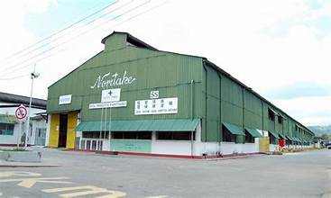
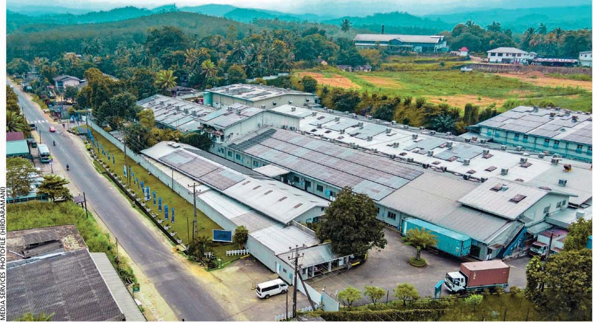
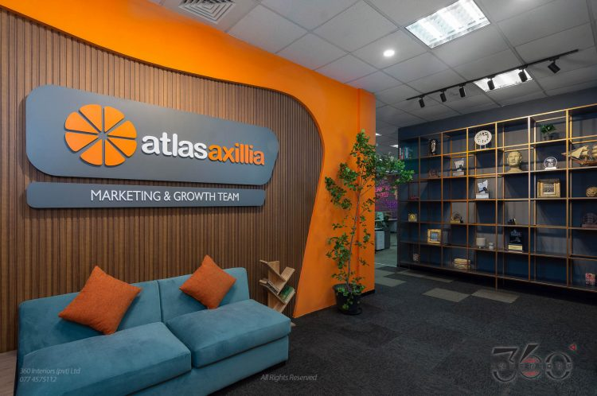

Academic Coursework
Comprehensive modules completed during my BSc Honours Degree

Statistics

Operations Research

Computer Science

Turning complex data into actionable insights. Passionate about statistical modeling, optimization, and solving real-world problems using quantitative methods.
I am a final-year undergraduate specializing in applying quantitative techniques to extract insights from complex data. My academic journey has equipped me with a strong foundation in both theoretical statistics and practical operational modeling.
Seeking an internship in analytics, operations research, or data science to solve real-world industrial challenges.
Comprehensive modules completed during my BSc Honours Degree

Performed advanced multivariate statistical analysis to model relationships between facial thermal features and environmental conditions.

Architected a dynamic BI solution to transition a hardware manufacturer to centralized, data-driven decision-making.

Built an end-to-end data pipeline to analyze retail shopping behavior for marketing and loyalty program optimization.

Developed an OR optimization model and Streamlit app to determine cost-effective locations for centralized waste facilities.
Specialist & Team Leader Roles
Click to view full details, extensive leadership roles, certificates, and service letter.
View Full DetailsMultiple Roles
Click to view full details
View Full DetailsVolunteer
Click to view full details and event photos from the Volunteer Summit and Code Club.
View Full DetailsRole: Member
Conducting OR talks and educational programs to connect students with the industrial world
Role: Organizing Committee Member
Click to view full details and service letter.
View Full Details


International Business Studies Campus (IBS)
As a final-year undergraduate passionate about data and operations research, I am eagerly seeking an internship opportunity to learn and grow within a professional environment. I would be honored to bring my academic background in statistical modeling and optimization to support your team's goals. I warmly welcome the opportunity to discuss how I can contribute to your organization.